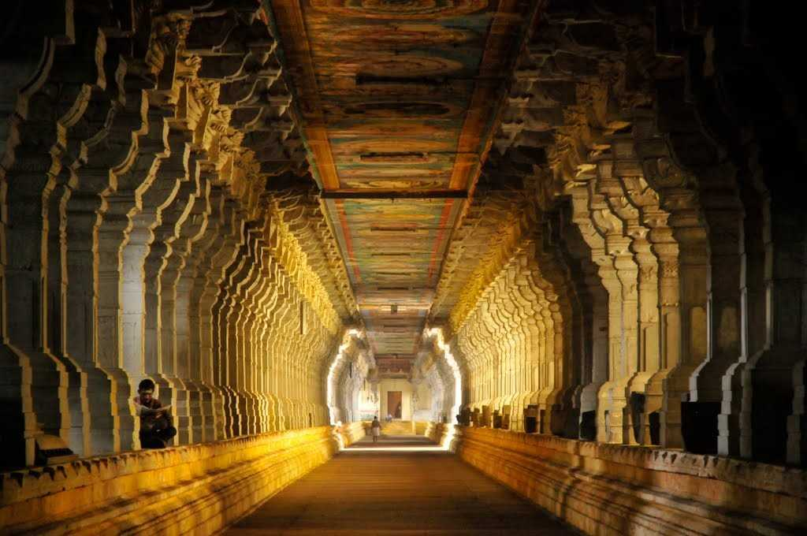

Gallery

KODAIKANAL
Located in the state of Tamil Nadu, Kodaikanal is one of the most famous honeymoon destinations in India. A Lakeside resort town of Tamil Nadu, Kodaikanal has a beautiful climate, mist-covered manicured cliffs and waterfall that come together to create the ideal setting for a perfect getaway. Kodaikanal means 'the gift of the forests'.
Best Time: October - June

RAMESHWARAM
Rameshwaram is located on a beautiful island in the South Indian state of Tamil Nadu. It is separated by a small Pamban channel from Sri Lanka. According to Hindu mythology, this is the place where Lord Rama created a bridge across the sea to Sri Lanka.
Best Time: Throughout the year

KANYAKUMARI
Bordered by the three seas - Arabian, Indian and the Bay of Bengal, Kanyakumari is the southernmost tip of the Indian Peninsula. A small coastal town in the state of Tamil Nadu, Kanyakumari was earlier known as Cape Comorin.
Best Time: October to February

OOTY
Nestled amidst Nilgiri hills, Ooty, also known as Udagamandalam, is a hill station in Tamil Nadu which serves as a top-rated tourist destination. Once regarded as the summer headquarters of the East India Company, the Queen of the hills is a picturesque getaway.
Best Time: Throughout the year

YERCAUD
Nestled in the Shivaroy Hills of Tamil Nadu, Yercaud is a hill station in the Eastern Ghats steeped in abundant greenery. Commonly called ‘Ooty of the Poor’, this region has a history dating back to the time of the British. Located at an altitude of 4970 feet, Yercaud is known for its vast expanses of coffee plantations and great weather.
Best Time: October - June
CHENNAI
Formerly known as Madras, Chennai is the capital city of the state of Tamil Nadu, in the southern part of India. Located on the Coromandel coast of Bay of Bengal, Chennai is as dynamic as it is immersed in tradition. This 'capital of the south', is one among the four metropolitan siblings of India, having a rich cultural history which it perfectly balances with its metropolis lifestyle.
Best Time: October to March
AUROVILLE
Located around 15 km from the city of Pondicherry, Auroville is located in Tamil Nadu and was founded in 1968 by Mirra Alfassa, a disciple of Aurobindo and fondly known as the 'Mother' of Sri Aurobindo Society. This place is the epitome of tranquillity and proves as the perfect escape for the ones in search of peace. The best way to experience Auroville ashram is to actually just sit in one of the cafes, and talk to some of the residents here about their experience of living in the city.Conceived as the 'Universal Town', Auroville is an experimental township where people from across the world of all cultures and traditions come and live together in peace. People from 124 countries including Indians from 23 different states came together with some of their native soil brought from their homelands and deposited in a marble urn. Currently, over 2,800 people from over 195 different nationalities are the official residents of this township. The Aurovilleans as they call themselves live together on the principles of peace, harmony, sustainable living and 'divine consciousness' which was the philosophy of the Mother.
Best Time: November to March
HOGENAKKAL FALLS
Hogenakkal is a waterfall located in Dharmapuri district of Tamil Nadu where the Kaveri river splits into multiple streams of waterfalls. Located at a distance of 180 km from Bangalore, Hogenakkal has water throughout the year. The carbonite rocks, the coracle (basket boat) rides, freshwater fish, oil massages by locals make it a perfect one day trip or a weekend getaway from Bangalore.
Best Time: October to March

MAHABALIPURAM
Famous for its intricately carved temples and rock-cut caves, Mamallapuram or Mahabalipuram as it is famously known, is a historically important and well-loved tourist location situated on the Coromandel Coast along the Bay of Bengal, in the state of Tamil Nadu. Once the abode of the famous demon king Mahabali, Mahabalipuram was later renamed Mamallapuram.
Best Time: November to February
VEDANTHANGAL
Lying close to the important district of Mahabalipuram, is Vedanthangal, best known for its bird sanctuary. The compact water tank of 30 hectares that the sanctuary is built around is home to at least 30,000 birds every year during migratory season.
Best Time: November to February
KUTRALAM
Courtallam, also known as Kutralam, is a perfect getaway from Tenkasi and Tirunelveli. A small town bordering Kollam District, Courtallam is famous for its waterfalls on the Western Ghats. With captivating panoramic vistas, the township is popularly renowned as 'Spa of South'. It has nine waterfalls in the region that add a charm to its exotic beauty. One will also find Kutrallam adorned with ancient temples reflecting the age-old legends attached to them. The town itself like many other cities of India narrates mythological folklores adding to its mystique.
Best Time: July to March
BELLIKKAL
Bellikkal is one of those places where you can completely relax, without having to worry about a 'to-do' list for your vacations and yet experience mountains that will steal your breath away. Instead of having a hundred places to offer, it will take you by its beauty, calmness and serenity.
Best Time: Throughout the year